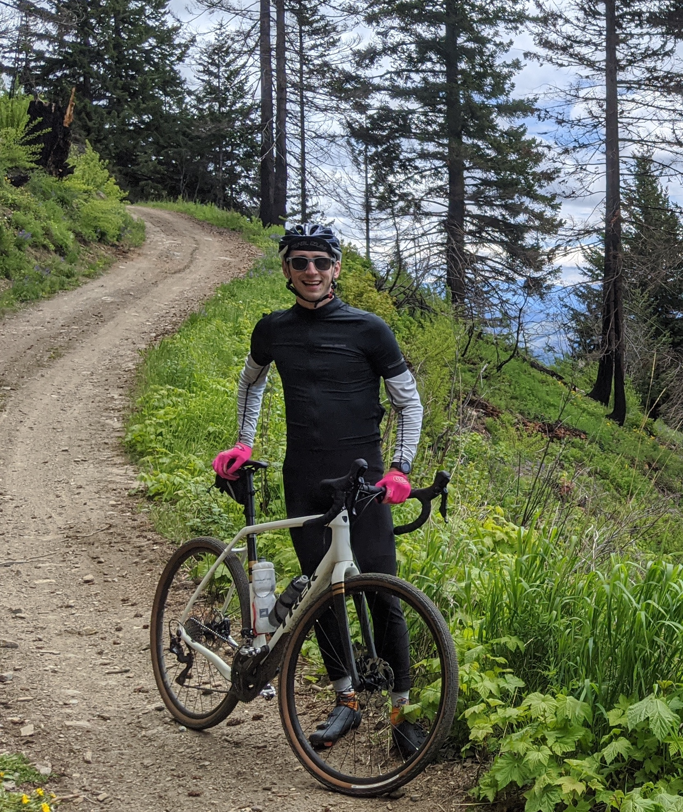

Mission
Welcome to the Team Page! When we decided on our project we tossed around a few ideas and then ultimately decided to try and re-create NewYork Times fun word game: wordle, but instead as "Codle!" We wanted to create a fun game to help us study code terminology.

GitHub
Ben Carter
Howdy viewer!
Aside from loving programming, I am a long-time worker in the technology space. I love to ride my bicycle as far as it will take me. When it isn’t cycling weather you’ll need to head to the mountains to catch me, as I spend as much of the winter as possible skiing, or touring in the backcountry. I live in West Seattle, with my lovely wife (a Code Fellows Alum!) and my best cat buddy Apollo. And soon we will be welcoming a new kitten into the house!
Tanesha Brester

Hello! I'm Tanesha, a software devloper student. I have
Cole Gibbs

Some great extraordinary stuff about Cole
 GitHub Profile
GitHub Profile
Eden Brekke
Hello! Excited to have you here.
I'm Eden, and I'm just a Baby Software Developer, and a trained Virology Research Scientist.
I love video games and art of all sorts, including but not limited to drawing, cooking, and crafting.
I'm also always interested in trying new activities, some of my favorites that I've tried are skateboarding, rock climbing and aerial yoga!
Finally I think a large part of myself is my love for animals, I have two cats and I'm always eager to meet and make new animal friends.
I hope you enjoyed our CODLE program!